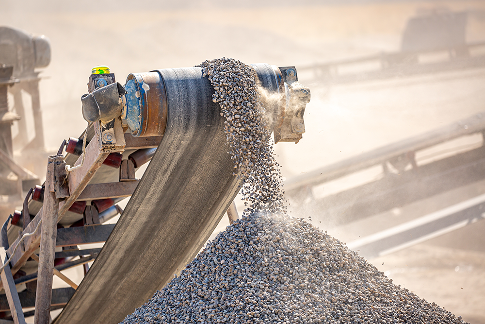
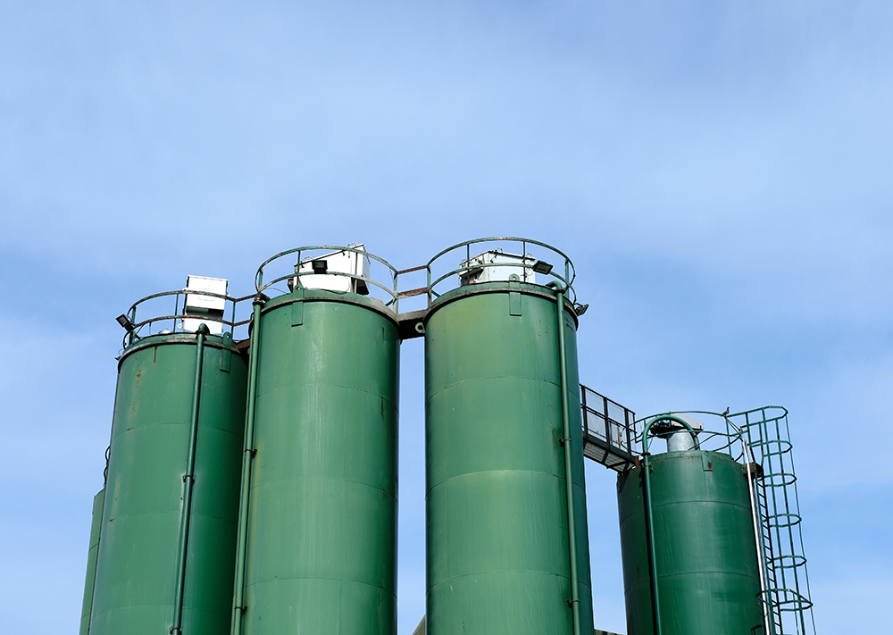
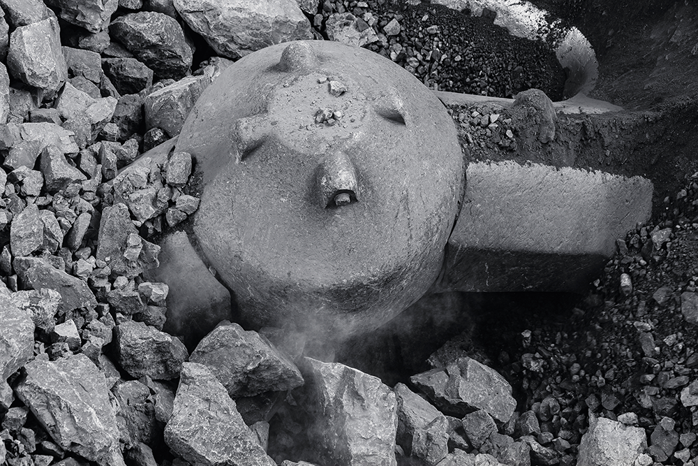

Refractory and cement
ELCON designs and implements intelligent automation systems for the refractories and cement industry.

What ELCON does.
ELCON designs and implements intelligent automation systems for the refractories and cement industry. Our solutions streamline conveyor operations, material routing, and plant-wide control, enabling high levels of automation with minimal operator input. We prioritize uninterrupted production, even during reconstructions and shutdowns, by rigorously testing every modification.
Electrical design
- 01Based on client-supplied material lists, signal lists, and P&ID diagrams
- 02Sample loop designs are reviewed before full electrical plans are finalized
- 03Electrical cabinets are built from approved plans and tested during FAT
- 04On-site wiring and SAT testing ensure seamless integration
Programming
- 01Developed from client-provided functional specifications
- 02FAT testing includes digital twin simulations to validate logic
- 03On-site testing covers IO signal verification and full functional checks
- 04Safety functions are a key focus throughout development and testing
The pain points.
- Large number of motors, valves, sensors, and conveyors
- Need for precise sequencing and automated routing
- Limited operator availability driving demand for full automation
- Critical need for diagnostics and visualization of process conditions
Our solution.
- Siemens CEMAT libraries with group and route objects for automated conveyor control
- MES integration for order-driven production with minimal operator input
- Interlock blocks and diagnostics tools for visualizing readiness and faults
- Multi-phase testing (FAT and SAT) ensures reliability during upgrades and maintenance
RHI Magnesita, Radenthein



RHI Magnesita is a company dedicated to the development and manufacture of refractories for use in the glass, lime, cement, steel and many other industries where high temperatures (above 538°C) play a key role in production.
The crushing area consists of three stages: unloading up to 10 different materials, crushing and calibrating them through granulators and screens, and finally delivering blended materials to production. After calibration, materials move to storage silos, while the delivery stage, controlled from the main control room, feeds the lines via more than 120 silos.
The customer wanted to replace an old system with a modern DCS (Distributed Control System) supported by a MES (Manufacturing Execution System) at a plant in Carinthia, Austria. The old control system was based on Siemens SIMATIC S5 controllers, which were no longer up to the modern needs for digitisation and automation, and the plant did not have an interface that would allow comprehensive control of production, but rather many smaller interfaces from different vendors (WinCC, Wonderware), which were weakly interconnected with each other.
Our company’s role in the replacement was to program the crushing area, covering three phases on four controllers, integrate the DCS with the MES and integrate the existing machines into the DCS. In addition to the programming itself, we were also tasked with carrying out the FAT (Factory Acceptance Test), SAT (Site Acceptance Test) and the commissioning itself. The programming was done in the PCS 7 software package with the CEMAT library, which was developed for the needs of the cement and mining industries. In accordance with the customer’s specific wishes regarding the production process, we developed a group of function blocks that integrate with the aforementioned library. Due to the wide range of products that the plant manufactures, a large number of different materials are used in the production process, which have different properties that have to be taken into account in the process itself. In order to increase reliability and reduce the burden on the operators, we have automated the consideration of material parameters with the APF (Advanced Process Functions) software package in cooperation with Siemens AG, which was the main contractor and our customer.
References.
| Customer | Year | Project | Goods and services |
|---|---|---|---|
| Rhi Magnestia Radenthein / Trips | 2023 | Automation (Reconstruction) of production of refractory products | Software development |
| RHI MAGNESITA RADENTHEIN / SIEMENS | 2021, 2022, 2023 | Automation (Reconstruction) of production of refractory products | Software development |
| Veitsch-Radex Gmbh / PMS | 2021 | Automation of Mining part | Software development |
| Salonit Anhovo | 2019, 2020 | Automation of Cement plant (Crusher and sand pile building device) | Electrical detail design Software development, Startup of large medium voltage drives |
Book a free call.
Ready to elevate your cement operations? Schedule a free consultation for system modernisation.